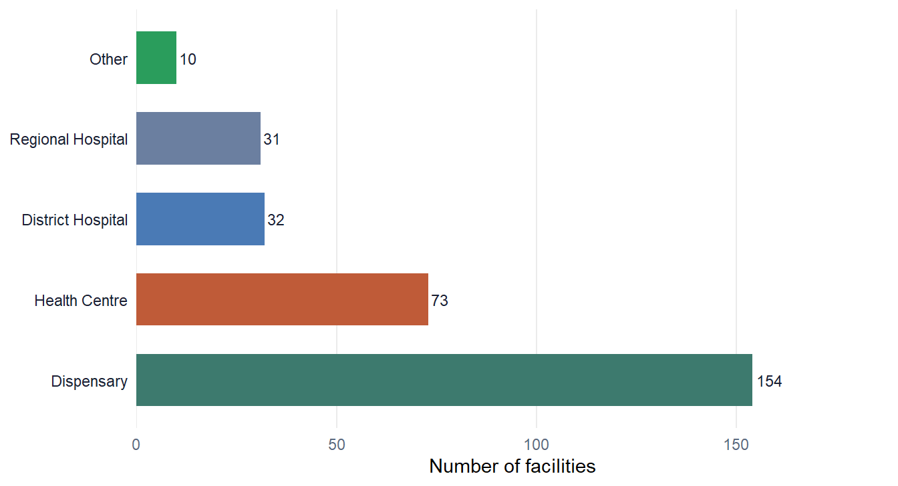
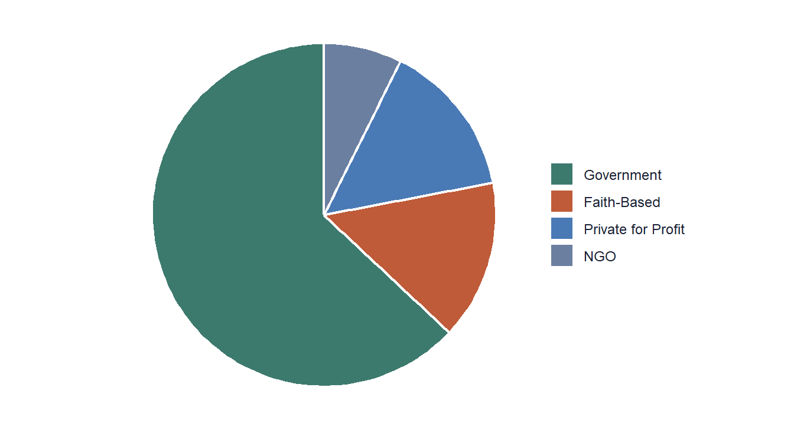

Tanzania

Overview
Tanzania Health Facility Landscape
Tanzania operates a tiered health system — from national and regional referral hospitals down to dispensaries and community health posts — overseen by the Ministry of Health, Community Development, Gender, Elderly and Children (MoHCDGEC).
This dataset aggregates facility records from the national master facility list and annual DHIS2 organisation unit exports, covering all 26 regions of mainland Tanzania and Zanzibar. Records are harmonised to the HF Portal common schema and validated against GADM v4.1 administrative boundaries.
Coordinate coverage stands at 86 %. Facilities without GPS
points are assigned the centroid of their lowest available administrative unit
and flagged via coord_source = "Centroid".
Primary source
MoHCDGEC / DHIS2
Coordinate system
WGS84 (EPSG:4326)
Update frequency
Annual (Oct each year)
Licence
CC BY 4.0
Interactive Map
Health Facilities Map
Click any marker for facility details. Use the layer control to filter by facility type or ownership.
Demographics
Facility Composition
Breakdown of facilities by type and ownership across Tanzania.
By Facility Type

By Ownership

Facility Count by Type & Ownership
| Type | Faith-Based | Government | NGO | Private for Profit |
|---|---|---|---|---|
| Dispensary | 23 | 100 | 15 | 16 |
| District Hospital | 2 | 20 | 1 | 9 |
| Health Centre | 12 | 44 | 4 | 13 |
| Other | 0 | 8 | 0 | 2 |
| Regional Hospital | 8 | 17 | 2 | 4 |
Services
Available Health Services
Service availability across facility levels as captured in the dataset.
Malaria Services
Outpatient diagnosis, rapid diagnostic tests (RDTs), artemisinin-based combination therapy (ACT), and inpatient malaria management.
Available at Health Centres & above
Maternal Health
Antenatal care (ANC), skilled birth attendance, postnatal care, and emergency obstetric services at district and above.
Available at Health Centres & above
Immunisation
Routine EPI services including measles, DPT, polio, and seasonal malaria chemoprevention (SMC) where applicable.
Available at Dispensaries & above
Laboratory
Basic diagnostics at lower levels; full laboratory capacity (blood counts, culture, parasitology) at district hospitals and above.
Full capacity at Hospitals
HIV / TB Services
HIV testing, counselling, ART initiation and follow-up, TB diagnosis and DOTS at PEPFAR-supported facilities and higher levels.
Selected facilities
Emergency Care
Emergency triage and basic resuscitation at health centres; comprehensive emergency and surgical care at district hospitals.
District Hospitals & above
Service availability in this dataset is derived from SARA survey rounds and DHIS2 service indicators. Coverage may not reflect real-time facility status. Consult the quality report for survey dates.
Data Quality
Quality Assessment — v1.2
Standardised quality scores across five dimensions. Full report included in the download bundle.
Coordinate Validity
86 / 100
86 % of facilities have valid GPS points within Tanzania's boundary
Attribute Completeness
78 / 100
Mean non-missing rate across all schema fields
Duplicate Rate
< 0.5 %
Post-deduplication residual duplicate rate
Admin Consistency
94 / 100
admin1–admin2 codes consistent with GADM v4.1
Temporal Coverage
2015 – 2024
10-year longitudinal coverage with annual snapshots
Download
Access the Dataset
All files are hosted on Zenodo under CC BY 4.0. Please cite the DOI in any publication.
Facility List (CSV)
Flat file, all 7 560 facilities with full schema fields
Spatial File (GeoPackage)
GPKG format, ready for QGIS / R / Python spatial analysis
R sf Object (RDS)
Pre-processed sf object for direct use in R modelling pipelines
Quality Report (PDF)
Full quality assessment including field-level completeness scores
📖 How to cite
HF Data Portal Team (2024). Tanzania Health Facility Dataset v1.2.
Zenodo. https://doi.org/10.5281/zenodo.XXXXXX
Load in R
# Option 1: Load the pre-processed sf object
hf_tz <- readRDS("data/tanzania/hf_demographic_sf.rds")
# Option 2: Read CSV and convert to sf
library(readr)
library(sf)
hf_tz <- read_csv("data/tanzania/hf_demographics.csv") |>
filter(!is.na(longitude)) |>
st_as_sf(coords = c("longitude", "latitude"), crs = 4326)
# Quick summary
cat("Facilities:", nrow(hf_tz), "\n")
cat("Regions:", n_distinct(hf_tz$admin1), "\n")
table(hf_tz$facility_type)